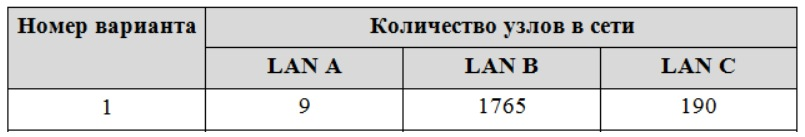
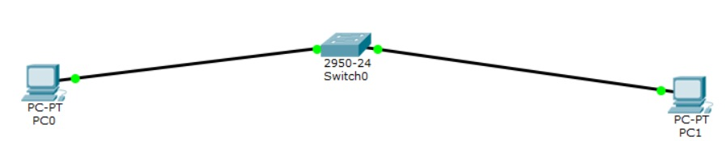
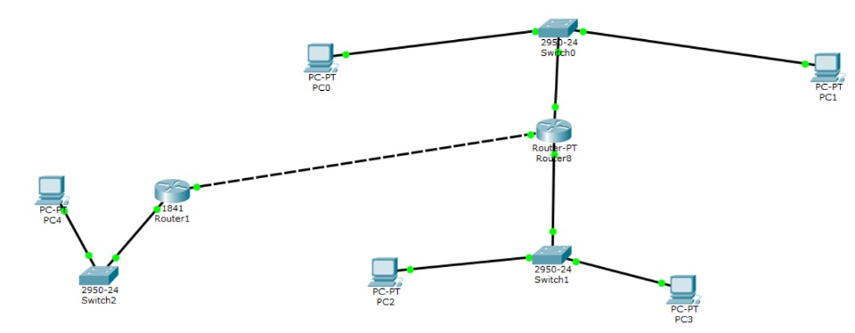

Лабораторная работа №2
Разработка простого веб-приложения
Проектирование и разработка индивидуального или коллективного веб-приложения с использованием html,css,js + json,xml
1. Создать игру на JS.
Отчет по лабораторным работам
Экосистема разработки программ с открытым кодом
Создание персональной страницы-отчета на github и работа с git
1. Регистрация на GitHub
2. Подключиться к репозиторию
3. Создать личную страницу
4. Создать персональную веб страницу-отчет с использованием html, css, js.
Разработка простого веб-приложения
Проектирование и разработка индивидуального или коллективного веб-приложения с использованием html,css,js + json,xml
1. Создать игру на JS.
"НАСТРОЙКА ЛОКАЛЬНОЙ СЕТИ ПЕРЕДАЧИ ДАННЫХ"
Цель работы: настройка коммутаторов и маршрутизаторов.Задание на лабораторную работу
Ход работы



Команды привилегированного режима // router#
Команды режима глобального конфигурирования // router(config)#
ВЫВОД
Все задачи, поставленные в лабораторной работе, выполнены.